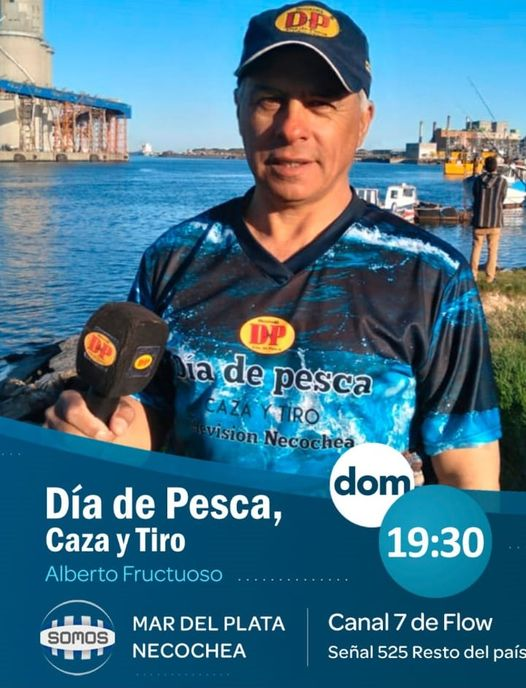
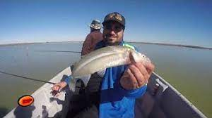
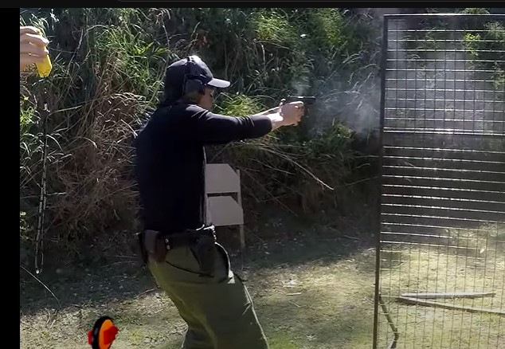
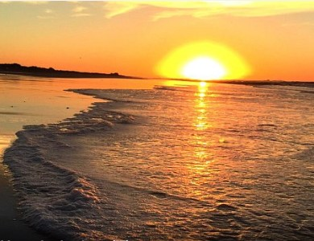
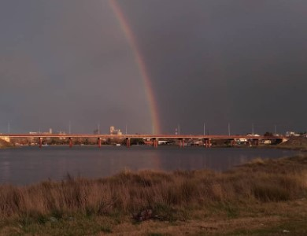
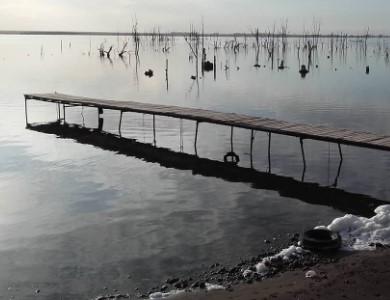

CANALES EN LOS QUE PODES ENCONTRARNOS

+Necochea
CableVision - Sabados 20:30hs.
+Miramar
Canal 10 - Sabados 21:30hs.
+Tandil
EcoTv - Sabados 21:00hs, repeticion: Domingos 21:30hs.
+Olavarria
Canal Local - Viernes 21:30hs.
+Villa Gesel
Gesalel - Jueves 21:00hs, repeticion: Viernes 12:00hs y Domingo 18:30hs.
Disciplinas Deportivas

Pesca Deportiva
Actividad deportiva se realiza a nivel personal o competición en ríos, lagunas, orilla del mar y mar abierto.

Tiro Practico
disciplina deportiva en la cual el tirador debe disparar a diversos blancos en el menor tiempo posible.
Tipos de Pesca

Mar
Pesca de costa desde la orilla/escoclleras o desde una embarcación

Río
En el Río Quequén podemos encontrar son: Pejerreyes, bagres, chanchitas, trucha y lisa.

Laguna
En invierno se destaca el pejerrey, tanto desde la costa como embarcado.